因为做项目，需要做漏洞检测。但是很多漏洞由于只能找到 POC，能触发程序崩溃。所以就需要做一个 系统异常处理的检测。在之前对异常处理有一定的了解下，很想从内核 对系统异常处理的步骤进行一个全面的调试分析。所以完成这篇文章，算是对这个知识的总结。
0x1 异常简介
异常是CPU或者程序发生的某种错误，异常处理就是异常产生之后Windows对于产生的错误的一段处理程序。异常可分为硬件异常和软件异常。
硬件异常
硬件异常是由CPU发现的异常，比如说除零异常、内存访问异常，经常看到的错误信息类似于 0xXXXXXX 指令引用的0xXXXXX内存，该内存不能为read”等。硬件异常可以分为三种：
- fault,在处理此类异常时，操作系统会将遭遇异常时的“现场”保存下来，比如EIP、CS等寄存器的值，然后将调用相应的异常处理函数。如果异常处理成功，则恢复到原始现场、继续执行
- trap，在处理此类异常时，操作系统会将异常的下文保存，在处理异常后，直接执行导致异常的指令的下一条指令。例如调试使用的断点操作就是基于该类异常，当下断点时调试器会将原本指令此处对应的十六进制保存下来，然后替换第一个字节替换为0xCC的，造成异常中断。
- abort，中止异常，主要是处理严重的硬件错误等，这类异常不会恢复执行，会强制退出
在windows系统中，硬件异常和中断被不加区分的存放在了一个向量表中，即IDT(interruption descriptor table)，可以使用windbg的 !idt指令查看IDT（查看 IDT，需要在内核调试模式下才能进行。这里我是使用windbg 双机调试内核）。下表中前面序号代表是第几个中断或异常，后面函数则是对这种异常或终端的处理函数，也即异常处理例程：
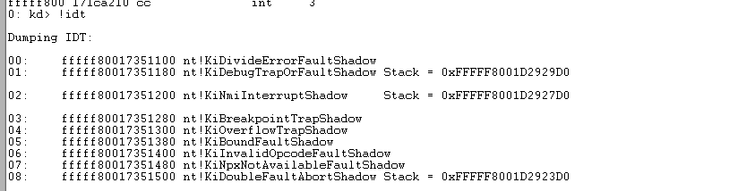
然后，可以使用 r idtr 来查看 idtr 寄存器中保存的 idt 表地址。
软件异常
由操作系统或应用程序抛出的异常，即异常不是由CPU触发的。比如C++关键字throw、Windows API函数的 RaiseException。这类异常都是基于RaiseException这个用户态API和NtRaiseException的内核服务建立起来的。RaiseException的函数原型：
1 | void RaiseException(DWORD dwExceptionCode , DWORD dwExceptionFlags,DWORD nNumberofArguments,const DWORD* lpArguments); |
dwException是异常状态码，可以在NtStatus.h中找到，应用程序也可以有自己的异常状态码。nNumberofArguments和lpArguments是用来定义异常的数据。
函数会将异常的相关信息传入一个维护异常的结构，即EXCEPTION_RECORD，然后再去调用RtlRaiseException函数，结构如下：
1 | 1. typedef struct _EXCEPTION_RECORD { |
之后调用的RltRaiseException会将当前的上下文保存到CONTEXT结构中，此后调用的函数会维护一个TrapFrame（即栈帧的基址）和异常的处理次数的标志，调用链如下：
1 | 1. 用户：RaiseException -> RltRaiseException -> NtRaiseException -> KiRaiseException |
0x2 异常分发
异常产生
硬件异常产生是当CPU尝试执行指令时检查到的问题。
当异常产生时，CPU查询中断处理表，找到异常处理的函数（_KiTrapXX之类）-> KiTrapXX函数里面调用CommonDipatchException-> 调用KiDispatchException进行异常分发。
软件异常的产生调用RaiseException->包装异常->NtRaiseException->进入内核-> 调用nt!NtRaiseException-> 调用KiDispatchException进行异常分发;其中包装异常的意思就是，因为这个异常是模拟的，所以这个异常的具体信息需要由程序自己来填充。
异常分发
硬件异常会通过IDT去调用异常处理例程（一般为KiTrap系列函数），而软件异常则是通过API的层层调用传递异常的信息，实际上二者最后都会靠KiDispatchException函数来进行异常的分发。
KiDisPatchException函数的函数原型如下：
1 | 1. void KiDispatchException ( |
最后，KiDispatchException 异常分发流程如下：
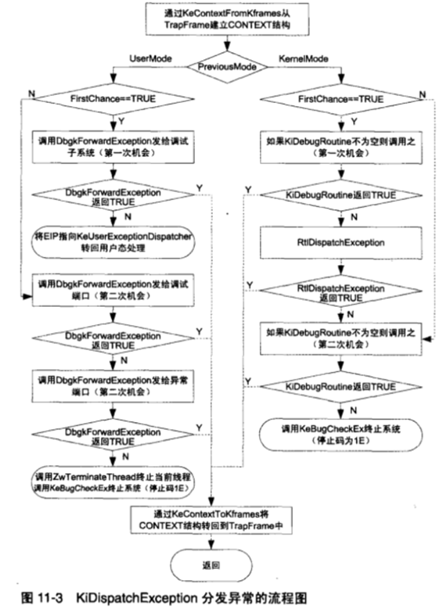
内核异常分发
当 PreviousMode 为 KernelMode 时，就会进入右边的 内核异常分发。
首先系统 会维护一个 KiDebugRoutine 函数，然后判断是否开启了 内核调试器。如果开启了，则将异常交给内核调试器处理。如果未开启内核调试器，则会进入 下一步 RtlDispatchException ，函数原型如下：
1 | BOOLEAN RtlDispatchException(PEXCEPTION_RECORD ExceptionRecord,PCONTEXT ContextRecord) |
ExceptionRecord 是系统的异常结构，ContextRecord 是系统的异常时的上下文环境。
函数处理逻辑为：
1 | 取异常登记链表的头指针 |
此时，如果异常被处理了，那么系统将会继续向下正常执行。如果异常没有被处理，则会进行第二轮分发，再次判断是否开启了内核调试器，如果没有开启内核调试器。则此时这个异常 为 UnhandleException（即未处理异常），则表明系统出现问题。常表现为系统蓝屏。
用户态异常分发
内核态的异常处理函数在内核中，用户态的异常处理函数在用户态中。当用户态异常经过KiDispatchException时，则需要切换到用户态的代码进行异常的分发和处理。
用户态异常的分发更加复杂，主要原因是处理此异常需要先切换到用户空间，然后交由用户层的异常代码再次进行分发，流程如下：
1 | 1. 检查当前是不是第一次分发该异常，如果异常第一次没有被处理，那么第二次就不会再调用异常处理程序，而是直接尝试将异常发给调试器； |
应用层异常的分发可能存在找不到异常处理方案，但是应用层和内核最大的区别在于，如果内核层发生的异常没有被正确执行，那么此时就会产生蓝屏。但是用户层的异常如果找不到异常处理程序处理该异常，那么最终Windows系统会根据当前系统的设置，调用UnhandledExceptionFilter的函数，这个函数被调用之后，要么弹出一个错误框，要么启动一个调试器。也即无论如何都会存在一个异常处理函数来接管最后的异常。
如果我们使用 Windbg 调试一个程序，当程序崩溃时，Windbg记录到的程序异常处理点 就应该从 ntdll!KiDispatchException函数处开始处理。
关于 VEH 和 SEH 的处理在 ntdll!RtlDispatchException函数中。
0x3 SEH和VEH
SEH
SEH是比较特殊的异常处理链表，全名为Structed Exception Handler，SEH的注册结构体只能作为局部变量存在于当前线程的调用栈，如果一旦结构体的地址不在当前调用栈的范围中，则在进行异常分发时，将不会进入该函数。SHE描述结构的注册随着函数的调用而注册，随着函数的结束而注销。其结构如下：
1 | 1. typedef struct _EXCEPTION_REGISTRATION_RECORD |
该链表只允许在头节点来进行删除和增添操作，且FS的0一直指向头节点，这就说明，越新的函数越接近头节点，系统会维护链表最后的next指向0xFFFFFFFF。
SEH是基于线程的一种处理机制，且依赖于栈进行存储和查找，所以被称作是基于栈帧的异常处理机制。SEH装载代码如下：
1 | push offset SEHandler |
先向栈中压入Handler和当前的节点，构成一个EXCEPTION_REGISTRATION_RECORD结构，而esp指向栈顶，正好就是新的EXCEPTION_REGISTRATION_RECORD，将他付给fs:[0]就是让SEH的头节点变成刚加入的新节点。SEH卸载过程即为恢复栈平衡的代码：
1 | mov esp,dword ptr fs:[0] |
SEH异常的安装实际上从main函数之前就开始了，当我们在启动一个进程时，实际的启动位置也就是kernel!32BaseProcessStartThunk，而在这个函数内就已经开始有try、catch结构了，线程的启动函数kernel!32BaseThreadStart也是如此：
1 | VOID BaseThreadStart(PTHREAD_START_ROUTINE pfnStartAddr, PVOID pvParam) { |
实际上这里的try catch结构构成的异常回调函数就是top level，即顶层异常处理，它们也是SEH链的最后一部分，并且可以看到，它们的except还存在一个叫做UnhandledFilter函数，和字面上的意思相似，这是用来实现异常过滤的函数。
当异常分发到RtlDispatchException函数时，会根据线程注册的SEH来处理该异常，其伪代码如下：
1 | 1. if VEH异常处理例程 != Exception_continue_search |
其执行过程为：
1 | • 调用VEH ExceptionHandler进行处理，成功则结束，否则进行SEH |
UnhandleExceptionFilter函数
未处理异常过滤函数，简称UEF函数，是异常处理和windows error report交接的关键，其流程如下：
错误的预处理，主要是对三个方面的检查：
- 是否存在着嵌套异常。嵌套异常是一种非常难处理的情况，如果处理的不好就很难再恢复原始的状态了，于是这种情况下UEF函数会直接调用
NtTerminateProcess结束当前的进程 - 是否是违例访问。这种情况下UEF函数会尝试去通过更改页属性的方式去修复错误，当然如果访问的是绝对不该访问的页，那UEF就无法解决了。
- DebugPort有没有。DebugPort在异常分发的过程中起到了标志着调试器是否开启的任务，一旦UEF检测到了
DebugPort那它就不会处理该异常，而是返回一个ExceptionContinueSearch，而它作为最后的异常处理也没有处理该异常的话自然也就进入了第二次的异常分发，成功使调试器接手该异常
- 是否存在着嵌套异常。嵌套异常是一种非常难处理的情况，如果处理的不好就很难再恢复原始的状态了，于是这种情况下UEF函数会直接调用
进行最终的处理
- 根据程序的设置直接结束进程。windows提供了
SetErrorMode的api用来设置某个标志位，一旦设置了，那那就不会出现任何的错误提示，程序直接结束。判断当前进程是否在job中，如果在且设置了未处理异常时直接结束，那就直接杀掉进程。 - 查看是否设置了JIT调试，如果是就开始进行调试。
- 弹出异常信息。此时程序会加载faultrep.all，调用ReportFault函数来汇报错误，如果设置了错误报告或者是非常严重的错误会弹出error窗口询问用户是否要发送错误报告，而其余情况下就会弹出我们熟知的application error
- 根据程序的设置直接结束进程。windows提供了
SEH处理流程
很久之前就写了这篇文章记录对windows的异常处理机制的笔记。但是随着后续深入学习，发现还有很多关键的流程与数据结构仍然不是很了解。所以在半年后，由来补充一些知识。下面关于SEH的知识点主要参考自此文章。
异常注册的链表会保存在线程的数据结构中，异常所涉及的一些行为都是线程相关的，比如线程 T1触发的异常只能由线程 T1来处理。
注册异常完后，线程就可以抛出或处理异常，系统也可以做相应的管理工作。系统的管理工作包括：找到触发异常的线程的异常处理链表，按照规则对该异常进行分发，根据分发后的处理结果在进行下一步的分发或结束处理。
系统管理所使用的数据结构或宏：
1 |
|
Exception_registration_record：结构就是异常信息
EXCEPTION_REGISTRATION_RECORD::Next指向下一个Exception_Registration_record，由此构成一个异常注册记录链表，链表的最后一个结点会将Next置为Exception_chain_end，表示链表到此结束；Exception_Registration_record::handler指向异常处理函数
当接收到异常后，系统找到当前线程的异常链表，从链表中的第一个结点开始遍历，找到一个 Exception_registration_record就调用它的 Handler，并把该异常（有第一个类型为 Exception_record的参数表示）传递给该 Handler，Handler处理并返回一个类型为 Exception_disposition的枚举值，用于指示系统下一个的行为：
ExceptionContinueExecution表示：已修正此异常的，从事发点重新执行EceptionContinueSearch表示：没有处理此异常，继续搜索ExceptionNestedException和ExceptionCollidedUniwnd后续解释
内核异常处理流程
首先 CPU执行的指令触发了异常，CPU改执行 IDT中的 KiTrap，KiTrap会调用 KiDispatchException，函数原型如下：
1 | VOID KiDispatchException ( |
该函数用于分发异常，在当前栈中分配一个 Context，调用 KeContextFromKframes初始化它，检查 ExceptionRecord->ExceptionCode，如果：
- 是
STATUS_BREAKPOINT，则将CONTEXT::Eip减一； - 是
KI_EXCEPTION_ACCESS_VIOLATION，将检查是否是由AtlThunk触发，如果是触发NX(不可执行)，则将ExceptionRecord->ExceptionInformation[0]置为 0（表示触发操作的类型，0表示读，1 表示写） - 如果
FirstChance为True，则将该异常传达给内核调试器，如果内核调试器没有处理，则调用RtlDispatchException进行处理 - 如果
FirstChance为False，则再次将该异常传达给内核调试器，如果内核调试器没有处理，则BUGCHECK - 如果第3步中，内核调试器没有处理，则将异常传达给应用层调试器，如果仍然没有处理，则将
KTRAP_FRAME和EXCEPTION_RECORD拷贝到UserMode的栈中，并设置KTRAP_FRAME::Eip为ntdll!KiUserExceptionDispatcher，返回（将该异常交由应用层异常处理程序进行处理） - 如果第4步中，内核调试器仍然没有处理，则调用
ZwTerminateProcess结束进程，并BUGCHECK
这里首先来看是内核异常 KernelMode的情况，先不讨论应用层异常。其重点是调用 RtlDispatchException，如下：
1 | BOOLEAN RtlDispatchException ( |
遍历当前线程的异常链表，依次调用 RtlExecuteHandlerForException，RtlpExecuteHandlerForException会调用异常处理函数，再根据返回值做不同的处理：
ExceptionContinueExecution表示：结束遍历，返回EceptionContinueSearch表示：继续遍历下一个结点ExceptionNestedException，从指定的新异常继续遍历
只有正处理 ExceptionContinueExecution才会返回TRue，其他情况返回 FALSE
这里先解释一下异常链表，系统将异常链表头保存在线程结构里，线程的内核数据结构体现是 _ETHREAD：
1 | kd> dt _ETHREAD |
对于系统，只需要借助 FS寄存器来加速寻找，在应用层 FS寄存器指向当前执行线程的 _TEB结构体，再内核层 FS寄存器指向另一个跟 CPU相关的结构体：_KPCR：
1 | nt!_KPCR |
与 _TEB一样，其第一个域成员也是 _NT_TIB，此时是 nt!_NT_TIB，而应用层是 ntdll!_NT_TIB，其结构一样。所以，无论在应用层和内核层，系统都可以使用 FS[0]找到异常链表。
那么CPU触发的异常处理流程，调用流程如下：
1 | CPU 检测到异常 -> KiTrap?? -> KiDispatchException -> RtlDispatchException -> RtlpExecuteHandlerForException |
上述为硬件异常。
软件异常
软件异常与硬件异常流程相似，如下：
1 | RtlRaiseException -> RtlDispatchException -> RtlpExecuteHandlerForException |
这里分析新函数 RtlRaiseException，用于触发异常，如下：
1 | VOID RtlRaiseException ( |
RtlRaiseException首先调用 RtlDispatchException分发异常，如果 RtlDispatchException成功分发（有处理函数处理了该异常），则结束本函数。如果没有成功分发，则调用 ZwRaiseException再次触发异常，此次传入的异常 FisrtChance被设置为 False。
此时系统提供的SEH机制，总结如下：
- 系统原始异常处理功能简单，实际过程中很难直接使用，整个异常处理过程就是遍历异常链表，挨个调用已成注册信息的处理函数，如果其中有某个处理函数处理了该异常（返回值为
ExceptionContinueExecution，就从异常触发点（如果是断点异常，则要回退一个字节的指令）重新执行。否则不管是整个链表中没有找到合适的处理函数(返回值为ExceptionContinueSearch)，或者遍历出现问题(返回值为ExceptionNestedException)，系统都会简单BUGCHECK。
编译器 异常处理
不同编译器提供的 SEH增强版本有不同之处，但其都基于 Windows系统提供的机制完善。一个典型的增强版就是微软的编译器(简称 MSC)里提供的 __try、__finally、__except。接着就用这个增强版作为目标进行分析：
1 | typedef struct _EXCEPTION_REGISTRATION PEXCEPTION_REGISTRATION; |
沿用了老版本的注册信息结构，在域成员名称山做了改动，把 Next改名为 Prev，把 Handler改为 handler。在原始基础上增加了 4 个 域成员 (scopetable、trylevel、_ebp、xpointers)。在实际中，最后一个域成员 xpointers存放在 prev之前，也即实际 __try增强版用的结构体如下：
1 | typedef struct _EXCEPTION_REGISTRATION PEXCEPTION_REGISTRATION; |
Exception_Registration::scopetable是类型为 scopetable_entry的数组；
Exception_Registration::trylevel是数组下标，用来索引 scopetable的数组成员；
_ebp是包含该 _Exception_Registration结构体的函数的栈帧指针，对于没有 FPO优化的函数，一开头通常有个 push ebp的操作，_ebp的值就是被压入的 ebp的值。
原始版本中，每一对 触发异常-处理异常 都会有一个注册信息即 Exception_Registration_Record，也即 每一个 __try/__except(__finally)都对应一个 Exception_registration。
但实际不同，每个使用 __try/__except(__funally)的函数，不管其内部嵌套或反复使用多少 __try/ __except(__finally)都之注册一遍，即只讲一个 Exception_Registration挂入当前线程的异常链表中，（对于递归函数，每一次调用都会创建一个 Exception_Registration，并挂入线程的异常链表中）。
那如何处理函数内部出现的多个 __try/__except(__finally) 呢？这多个 __except 代码块的功能可能大不相同，而注册信息 EXCEPTION_REGISTRATION 中只能提供一个处理函数 handler，怎么办？
MSC 的做法是，MSC 提供一个处理函数，即 EXCEPTION_REGISTRATION::handler 被设置为 MSC 的某个函数，而不是程序猿提供的 __except 代码块。代码提供的多个 __except 块被存储在 EXCEPTION_REGISTRATION::scopetable 数组中。我们看看上面的 scopetable_entry 定义：
1 | struct _EH4_SCOPETABLE { |
其中 scopetable_entry::lpfnHandler 就是程序猿提供的 __except 异常处理块代码。而 lpfnFilter 就是 __except 的过滤块代码。对于 __finally 代码块，其 lpfnFilter 被置为 NULL，lpfnHandler 就是其包含的代码块。
1 | VOID SimpleSeh() |
编译时，编译器会为 SimpleSeh分配一个 Exception_Registration和一个拥有3个成员的 scopetable数组，并将 Exception_Registration::scopetable 指向该数组（EXCEPTION_REGISTRATION::scopetable只是一个指针，不是数组）。按照 __try关键字出现的顺序，将对应的 __except/__finally出入数组：
1 | scopetable[0].lpfnFilter = ExceptionFilter_0; |
根据之前讨论的流程：RtlRaiseException -> RtlDispatchException -> RtlpExecuteHandlerForException。
RtlpExecuteHandlerForException 会调用注册信息中的处理函数，即 EXCEPTION_REGISTRATION::handler。该函数是由 MSC 提供的，内部会依次调用 scopetable 中的 lpfnHandler。
例如 在14和15行之前触发异常，那应该先从 scopetable[2] 的 ExceptionFilter_2 开始执行，假设该函数返回 EXCEPTION_CONTINUE_SEARCH。那接下来应该是 scopetable[1]，假设 ExceptionFilter_1 也返回 EXCEPTION_CONTINUE_SEARCH。那么接下来是不是就应该轮到 scopetable[0] 了？不是。咱们再看看上面的伪代码，行14和行15之间的代码并没处于第一个 __try/__except 的范围中，该异常轮不到 scopetable[0] 来处理。那怎么办？SimpleSeh 执行的过程中怎么知道到 scopetable[1] 就应该停止？
MSC是通过 scoptable_entry::prviousTryLevel解决：
1 | scopetable[0].previousTryLevel = TRYLEVEL_NONE; |
scopetable_entry::previousTryLevel 包含的意思是“下一个该轮到数组下标为 previousTryLevel 的单元了”。当 scopetable_entry::previousTryLevel 等于 TRYLEVEL_NONE(-1) 时，就会停止遍历 scopetable。
此时，当14和15行之间触发异常时，首先遍历到 scopetable[2]，处理完后，找到 scopetable[2].previousTryLevel，发现其值为1，那么遍历到 scopetable[1]，处理完后，找到 scopetable[1].previousTryLevel，发现其值为 TRYLEVEL_NONE，于是停止遍历。
如果行4和行5之间触发了同样的异常，执行流程应该如何。首先，执行 scopetable[2]，然后在 scopetable[1]。但显然不对，这次的异常是在第一个 __try/__except 中触发的，轮不到 scopetable[2] 来处理，怎么办？
这个时候就需要使用 EXCEPTION_REGISTRATION::trylevel ，其的作用就是标识从那个数组单元开始遍历。
与 scopetable_entry::previousTryLevel 不同，EXCEPTION_REGISTRATION::trylevel 是动态变化的，也就是说，这个值在 SimpleSeh 执行过程中是会经常改变的。比如，
执行到行4和行5之间，该值就会被修改为0；
执行到第12行，该值被修改为1；
执行到14行，该值为2。
这样，当异常触发时候，MSC 就能正确的遍历 scopetable 了。
图如下：
1 | 4G |--------------------------| ... |
该图函数关系为 func1->func2->func3->func4
真实代码分析，分为三块：SEH创建代码，MSC提供的 handler函数，以及展开函数。
首先宏和结构体如下：
1 |
|
SEH创建代码
1 | VOID SehTest() |
反汇编如下：
1 | kd> uf passthrough!SehTest |
最后 scopetable内容如下：
1 | kd> dd f8721468 |
前 16 字节用于其他作用，之后就是三个 scopetable_entry，使用大括号标记。对照前面的汇编代码可以发现，scopetable_entry::lpfnFilter和 scopetable_entry::lpfnHandler就是汇编中的空洞处的代码。其中，第三个 scopetable_entry::lpnFilter是 NULL，是因为这是一个 __try & __finally块，没有 lpfnFilter。
这里需要特别注意两点：
Exception_Registration::scopetable指针被__security_entry进行了异或加密Exception_Registration::scopetable并不直接指向scopetable_entry数组，在第一个scopetable_entry之前有 16 个字节，其主要作用是帮助验证scopetable是否被破坏。第三个 DWORD，即上文中的ffffffd4是一个偏移量，后续会讲
MSC提供的 EXCEPTION_REGISTRATION::handler
EXCEPTION_REGISTRATION::handler指向由 MSC编译器提供的一个函数，这个函数内部负责调用 scopetable[?]->lpfnFilter/lpfnHandler。这个函数通常为 module!__except_handler，其中 module为模块名，?表示某数字。
这里的 __except_handler4的原型如下：
1 | EXCEPTION_DISPOSITION _except_handler4 ( |
反汇编代码：
1 | kd> uf PassThrough!_except_handler4 |
函数代码不长，分为两大分支：一个分支处理异常，一个分支处理展开。处理异常的代码负责遍历 scopetable，依次调用 scopetable_entry::lpfnFilter，并针对不同的返回值做出不同的处理：
- 返回
Exception_Continue_execution，说明异常已经被调用的lpfnFilter修复，返回ExceptionContinueExecution - 返回
Exception_Continue_Search，则继续遍历下一个scopetable_entry - 返回
Exception_Execute_Handler，则说明当前scopetable_entry::lpfnHandler负责处理该异常，于是调用它。
一旦有某 scopetable_entry::lpfnFilter返回 EXCEPTION_EXECUTE_HANDLER，就会进行全局展开和局部展开。展开结束后会调用该 scopetable_entry::lpfnHandler，该函数即为 _except处理域，该函数形式是一个函数，实际上只是一段不返回的代码。即这段代码中没有 ret指令，执行完整个 _except处理域后，会接着执行其后的指令，并不会返回 _except_handler4。
_except_handler4在执行的过程中可能会调用这几个函数：
_EH4_CallFilterFunc 负责调用 scopetable_entry::lpfnFilter；
_EH4_TransferToHandler 负责调用 scopetable_entry::lpfnHandler；
_EH4_GlobalUnwind 负责全局展开；
_EH4_LocalUnwind 负责局部展开。
_EH4_CallFilterFunc和 _EH4_TransferToHandler的反汇编代码，如下：
1 | kd> uf PassThrough!_EH4_CallFilterFunc |
展开
我们假设一系列使用 SEH 的函数调用流程：func1 -> func2 -> func3。在 func3 执行的过程中触发了异常。
分发异常流程 RtlRaiseException -> RtlDispatchException -> RtlpExecuteHandlerForException，RtlDispatchException 会遍历异常链表，对每个 EXCEPTION_REGISTRATION 都调用 RtlpExecuteHandlerForException，RtlpExecuteHandlerForException 会调用 EXCEPTION_REGISTRATION::handler，也就是 _except_handler4。如上面分析，该函数内部遍历 EXCEPTION_REGISTRATION::scopetable，如果遇到有 scopetable_entry::lpfnFilter 返回 EXCEPTION_EXECUTE_HANDLER，那么 scopetable_entry::lpfnHandler 就会被调用，来处理该异常。
因为 lpfnHandler 不会返回到 _except_handler4，于是执行完 lpfnHandler 后，就会从 lpfnHandler 之后的代码继续执行下去。也就是说，假设 func3 中触发了一个异常，该异常被 func1 中的 __except 处理块处理了，那 __except 处理块执行完毕后，就从其后的指令继续执行下去，即异常处理完毕后，接着执行的就是 func1 的代码。不会再回到 func2 或者 func3，这样就有个问题，func2 和 func3 中占用的资源怎么办？这些资源比如申请的内存是不会自动释放的，岂不是会有资源泄漏问题？
这个问题就需要利用展开来解决，展开就是进行清理，包括动态分配的资源的清理，栈空间是由 func1的 mov esp, ebp这类操作顺手清理。那么展开工作由谁来完成，这里就需要交给触发异常的函数自己来完成。
展开分为两种：全局展开和局部展开
全局展开是指针对异常链表中的某一段，局部展开针对指定EXCEPTION_REGISTRATION。用上面的例子来讲，局部展开就是针对 func3 或 func2 （某一个函数）内部进行清理，全局展开就是 func2 和 func3 的局部清理的总和。再归纳一下，局部展开是指具体某一函数内部的清理，而全局展开是指，从异常触发点（func3）到异常处理点（func1）之间所有函数（包含异常触发点 func3）的局部清理的总和。
全局展开汇编代码如下：
1 | kd> uf PassThrough!_EH4_GlobalUnwind |
这里的全部汇编可以参考原文，总结如下：从异常链表头开始遍历，一直遍历到指定 EXCEPTION_REGISTRATION_RECORD，对每个遍历到的 EXCEPTION_REGISTRATION_RECORD，执行 RtlpExecuteHandlerForUnwind 进行局部展开。
局部展开： 在 _except_handler4中，有提到该函数既负责处理异常也负责局部展开，其区分功能的标志就是判断 EXCEPTION_RECORD::ExceptionFlags是否包含 EXCEPTION_UNWIND标志位：
1 | f87203dc test byte ptr [eax+4],66h ; pExceptionRecord->ExceptionFlags & EXCEPTION_UNWIND，判断是异常处理过程还是展开过程 |
局部展开具体汇编代码可以参考原文。
这里总结下处理异常和展开过程中涉及到的遍历操作：
- 在异常处理过程中，每个异常都至少会遍历异常链表两次（如果发生嵌套一行，比如展开过程中，又触发异常，则会遍历更多次）。一次是
RtlDispatchException中，遍历的目的是找到愿意处理该异常的_Exception_registration_record；另一次是在展开过程中，RtlUnwind函数内，遍历的目录是为了对每个遍历到的Exception_Registration_record进行局部展开 - 每个
scopetable也会被遍历至少两次，一次是在__except_handler中，遍历的目的是找到愿意处理该异常的scopetable_entry。另一次是在展开过程_local_unwind4函数内，目的是找到所有指定范围内的scopetable_entry::lpfnFilter为NULL的scopetable_entry调用其lpfnHandler即__finally处理块
VEH
VEH是一个全局链表，全名为Vectored Exception Handler，这个全局链表里面存放的异常处理函数可以过滤所有线程产生的异常，其处理函数的原型如下：
1 | typedef LONG |
VEH的注册是通过API函数AddVectoredExceptionHandler进行注册的，他比SEH拥有更优先的级别过滤异常。其原型如下：
1 | WINBASEAPI PVOID WINAPI AddVectoredExceptionHandler(ULONG FirtstHandler,PVECTORED_EXCEPTION_HANDLER VectoreHandler) |
第一个参数是一个标志位，表示注册的回调函数是在链表的头还是尾，0是插入尾部，非0是插入头部。第二个参数是回调函数的地址，返回一个VectoredHandlerHandle，用于之后卸载回调函数。回调函数原型：
1 | LONG CALLBACK Vectorhandler() |
在RltDispatchException的过程中VEH将会优先于SHE调用，若回调函数解决的问题和SEH相似，都会返回ExceptionContinueExcution表示处理完毕。然后借助CONTEXT的内容恢复上下文，跳过SEH继续执行程序，如果失败了就遍历VEH链表寻找解决方法，如果所有的回调函数都不能处理的话再将执行权归还，继续向下执行SEH的相关内容。
0x4 Windbg异常调试
已注册异常
我们以 Adobe Reader为例，来调试Windows异常处理。
当我们使用 Adobe Reader 打开一个有字体错误的 PDF时，Adobe Reader会弹出错误窗口，提示发生字体错误。
当我们使用Windbg调试时，程序首先会停在 KernelBase!RaiseException，我们查看调用堆栈，如下所示。
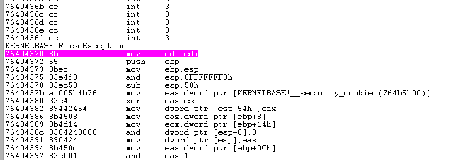
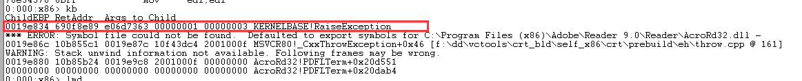
我们查看一下发生异常的地址，如下所示：
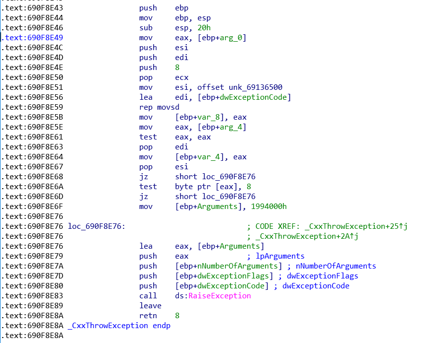
根据IDA函数名，我们能大概判断出此处为程序通过 Throw 抛出了一个异常。使得程序进入了 RaiseException异常处理。
然后进入了 ntdll!RaiseException，开始处理异常。
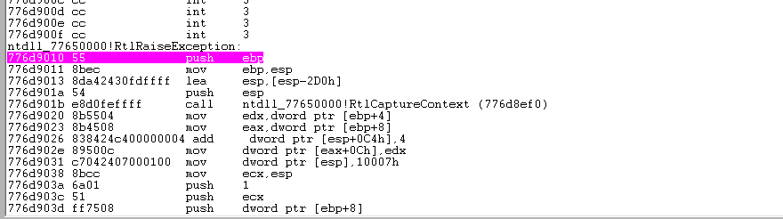
最后程序弹出了，错误窗口，如下所示：
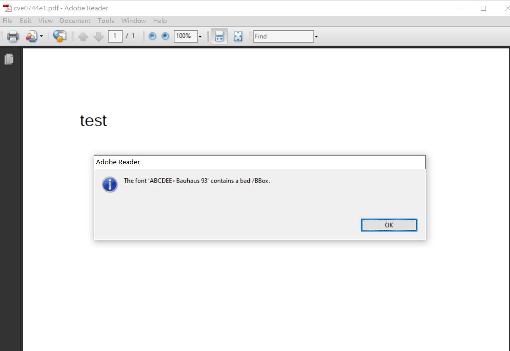
未处理异常
我以 Adobe Reader的漏洞cve-2010-2883调试为例，说明Windows的异常处理流程。
CVE-2010-2883是一个发生在Adobe Reader上的栈溢出漏洞，在当前Windows10环境下，由于内存堆布局的变化，原有POC样本在Windows10下实现堆喷时，并不会将ROP数据准确喷到 0x0c0c0c0c下，所以在执行到ROP时会导致内存访问错误。
我们在程序漏洞点处下断点：0x808b062处，可以看到该指令处的 虚表指针已经被改为一个 ROP地址，0x4a80cb38 是Adobe Reader一个未使用ASLR的icucnv38.dll的ROP地址。
725%5BF.png)
在执行该指令后，程序马上将会触发非法访问内存错误。我们在 ntdll!KiUserExceptionDispatcher 和 ntdll!RtlDispatchException 以及 最后的 KernelBase!UnhandledExceptionFilter下断点。
首先程序触发异常之后，我们的 调试器会接管异常。我们直接继续运行，走系统的异常处理 流程。
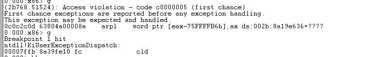
那么程序流程将会直接跳转到 ntdll!KiUserExceptionDispatcher，由于此时的Windbg在用户态调试，所以内核执行的部分会被直接忽略。也就是我们的异常 被分发到用户态下处理。
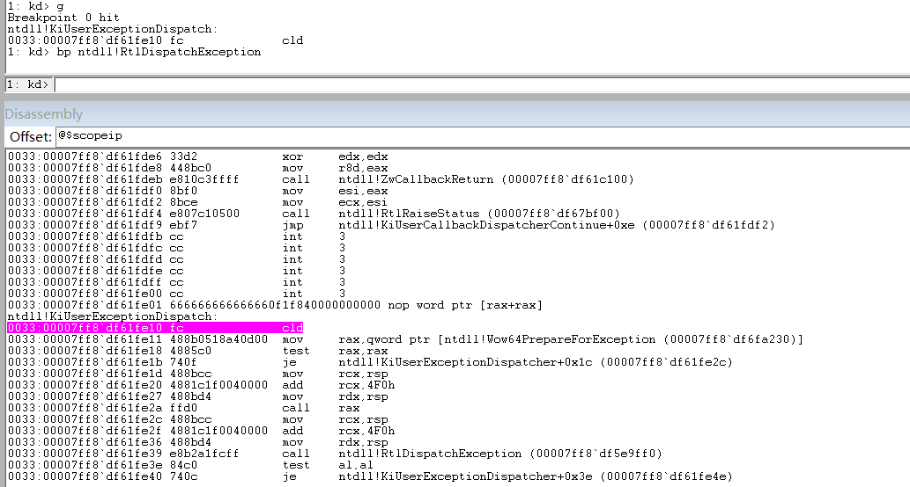
然后会在ntdll!KiUserExceptionDispatcher中跳入 ntdll!RtlDispatchException 执行 VEH 和 SEH。此时，我们可以查看一下程序的 SEH链，如下所示：
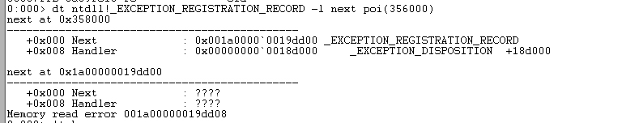
当系统 遍历 VEH 和 SEH 链表，不能够处理该异常时。那么系统就会去执行 SEH链表的最后一项 UnhandledExceptionFilter来处理异常。
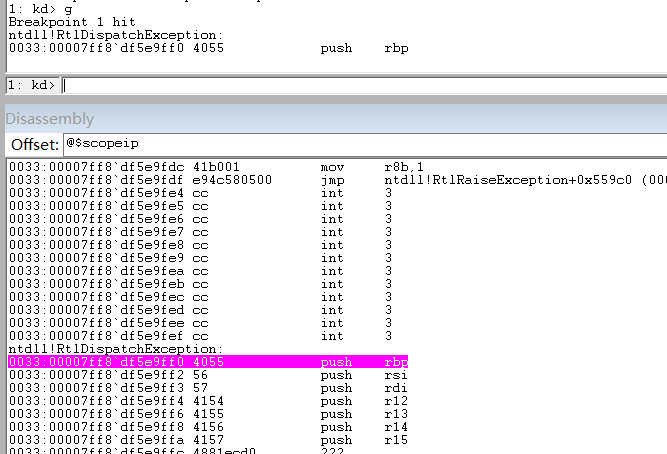
同时，我们可以看到其实在Adobe Reader发生漏洞的CoolType.dll 内是有注册 UnhandledExceptionFilter函数处理过程。下图是我们在 Windbg 中会看到程序最后会执行 GetCurrentProcess 和 TerminateProcess函数。
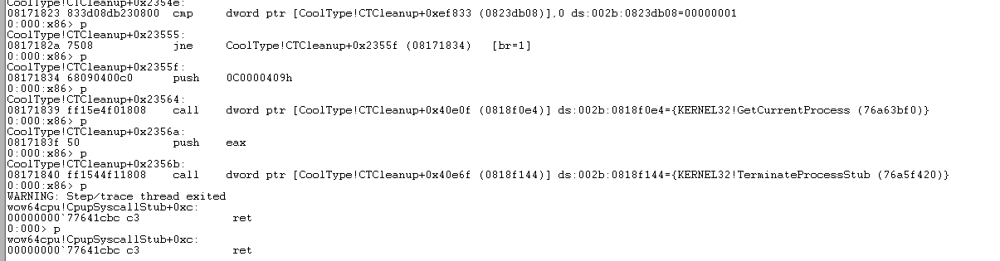
我们在CoolType.dll 反汇编中 中也可以看到关于 UnhandleExceptionFilter 的注册 以及处理步骤。
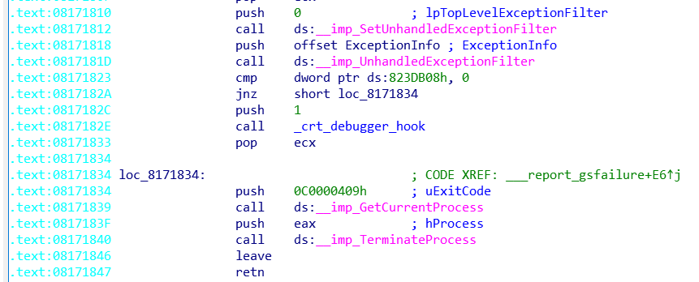
Windbg 中最后就在 TerminateProcess() 后结束，Adobe Reader最终退出。
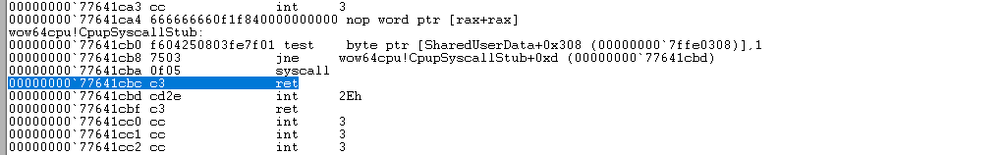
0x5 总结
本次对于Windows异常处理机制，主要是对异常处理时几个标志性函数进行了学习和调试。对于内核的处理，以及异常处理的详细流程并没有进行过多总结。感觉自己对于Windbg 的使用还是不够到位，某些关键步骤没有能够跟踪到，以后还要加强学习吧
参考文献
异常分类： Windows调试——从0开始的异常处理（上）
https://www.anquanke.com/post/id/175293
异常分发：Windows异常处理核心原理
https://blog.csdn.net/qq_42208826/article/details/85321301
SEH和VEH：Windows调试艺术——从0开始的异常处理
https://www.anquanke.com/post/id/175753#h2-0
异常处理： windows 异常处理
https://blog.csdn.net/lanuage/article/details/52225201
Windows用户态异常处理
https://terenceli.github.io/%E6%8A%80%E6%9C%AF/2014/03/31/windows-user-exception


- 本文作者： A1ex
- 本文链接： http://yoursite.com/2020/07/31/Windows系统异常处理调试/
- 版权声明： 本博客所有文章除特别声明外，均采用 MIT 许可协议。转载请注明出处！